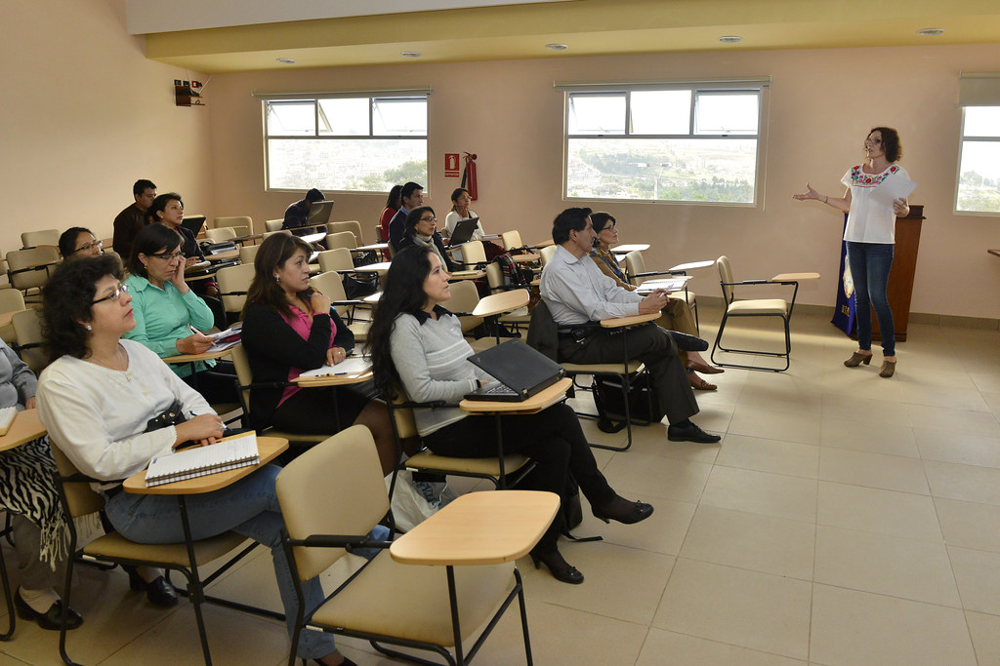

Informació

És la modalitat de formació permanent del professorat que consistix en una estada temporal en una empresa o institució pública o privada.
Atlantic Technological University


Estancies en formació
-
Comunitat Valenciana
- Dudas sobre convocatories: estadesempreses@gva.es
- Estancies formatives en empreses curs 2023/24 (PRÓXIMAMENT)
- Estancies formatives en empreses curse 2022/23: ací
-
Programa de estancies de formació en empreses
- Forma de presentació electrònica: ací
- Registre presencial: Registre de la Conselleria d'Educació de la Junta de Castella i Lleó (Monestir de La nostra Senyora de Prado, Autovia Puente Colgante, s/n 47071 Valladolid)
- Terminis
- Per a les estades a realitzar entre el 2 de maig i l'1 de setembre, el termini de presentació de sol·licituds començarà el dia 10 de gener i finalitzarà l'1 de febrer de cada any.
- Per a les estades a realitzar entre l'1 de desembre i el 30 d'abril el termini de presentació de sol·licituds començarà el dia 1 de setembre i finalitzarà el 20 de setembre de cada any.
-
Estades professionals INTEF
- Té la possibilitat de realitzar estades de dues setmanes en centres educatius d'Alemanya, Àustria, Bèlgica, Estònia, Dinamarca, Finlàndia, França, Itàlia, Malta, Noruega, els Països Baixos, Portugal, el Regne Unit, Irlanda, Suècia i Suïssa